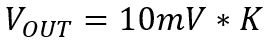
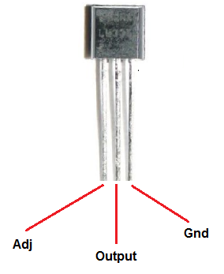
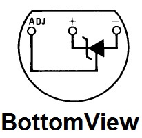
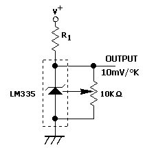

Questo integrato è un trasduttore di temperatura cioè in uscita fornisce una tensione proporzionale alla temperatura percepita. Questo componente è equivalente ad un diodo zener e il comportamento è regolato secondo la seguente formula:

Dove con Vo si intende la tensione in uscita dall'LM335 e K la temperatura espressa in gradi Kelvin. Può misurare temperature che hanno un range compreso tra -223 °K (-50°C) e 423°K (150°C). Il trasduttore presenta 3 piedini: il potenziale negativo, il potenziale positivo e l'adjustment (regolazione). Quest'ultimo, infatti, serve per la taratura della Vo. Esso va collegato ad un trimmer utilizzato per calibrare la temperatura manualmente.


void loop() {
temperatura=analogRead(0)*10*(5/1024);
Serial.print("Temperatura= ");
Serial.println(temperatura);
delay(1000);
}